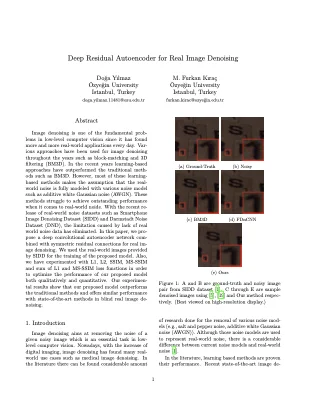
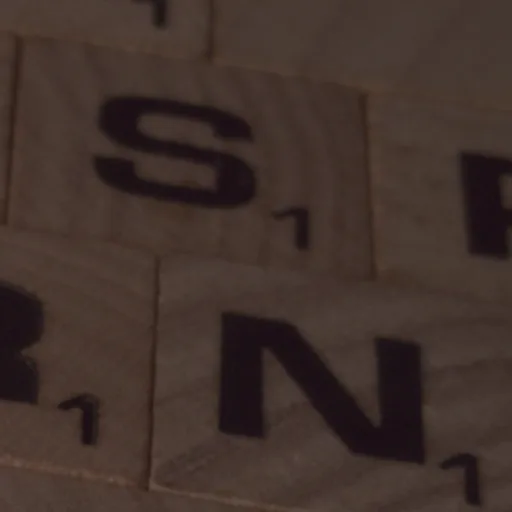
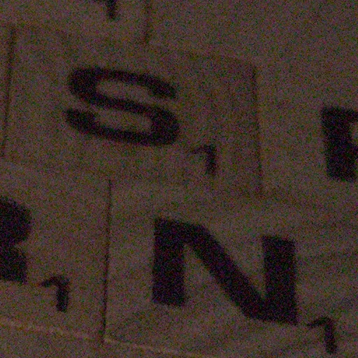
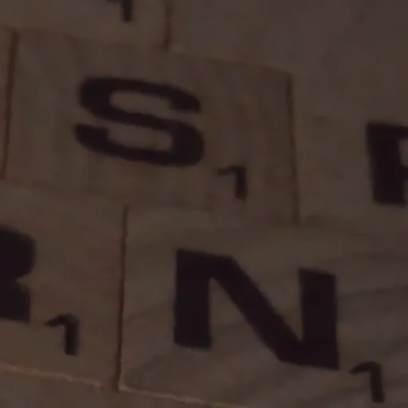
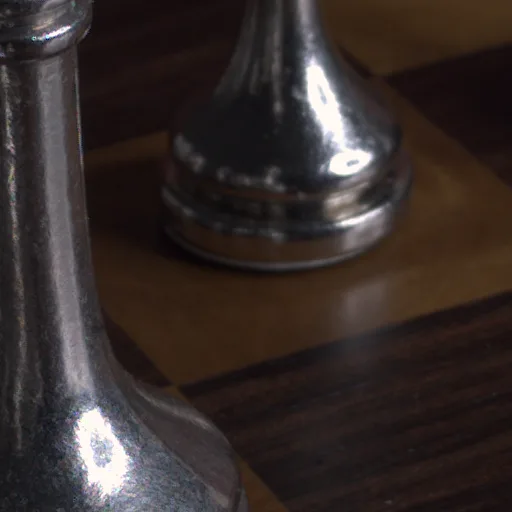
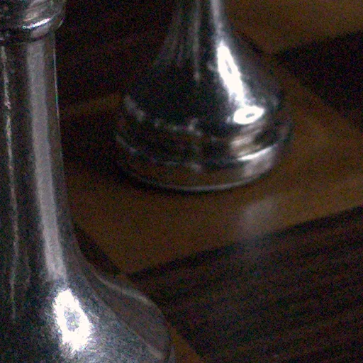
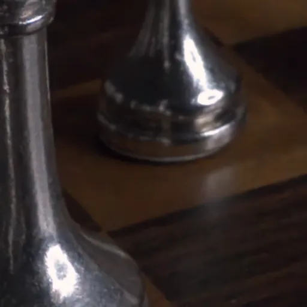
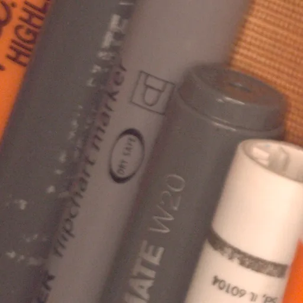
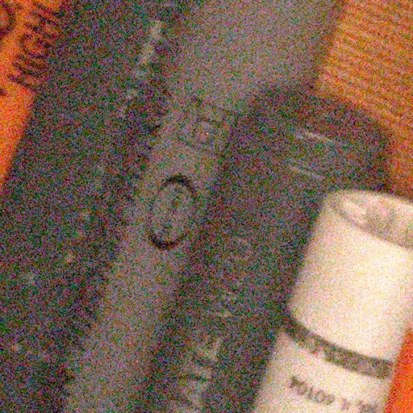
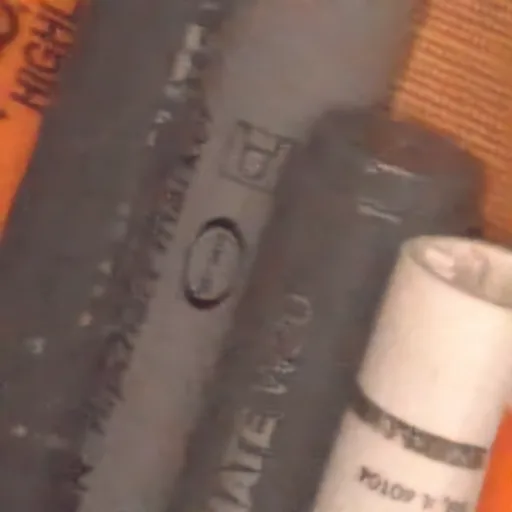

Image denoising is one of the fundamental problems in low-level computer vision since it has found more and more real-world applications every day. Various approaches have been used for image denoising throughout the years such as block-matching and 3D filtering (BM3D). In the recent years learning-based approaches have outperformed the traditional methods such as BM3D. However, most of these learning-based methods makes the assumption that the real-world noise is fully modeled with various noise model such as additive white Gaussian noise (AWGN). These methods struggle to achieve outstanding performance when it comes to real-world noide. With the recent release of real-world noise datasets such as Smartphone Image Denoising Dataset (SIDD) and Darmstadt Noise Dataset (DND), the limitation caused by lack of real world noise data has eliminated. In this paper, we propose a deep convolutional autoencoder network combined with symmetric residual connections for real image denoising. We used the real-world images provided by SIDD for the training of the proposed model. Also, we have experimented with L1, L2, SSIM, MS-SSIM and sum of L1 and MS-SSIM loss functions in order to optimize the performance of our proposed model both qualitatively and quantitative. Our experimental results show that our proposed model outperforms the traditional methods and offers similar performance with state-of-the-art methods in blind real image denoising.

Title: Deep Residual Autoencoder for Real Image Denoising
Author: Doğa Yılmaz
Supervisor: Assist. Prof. Furkan Kıraç
View Thesis (PDF) View Code on GitHubWarning: Demo results are best seen on a big screen.








